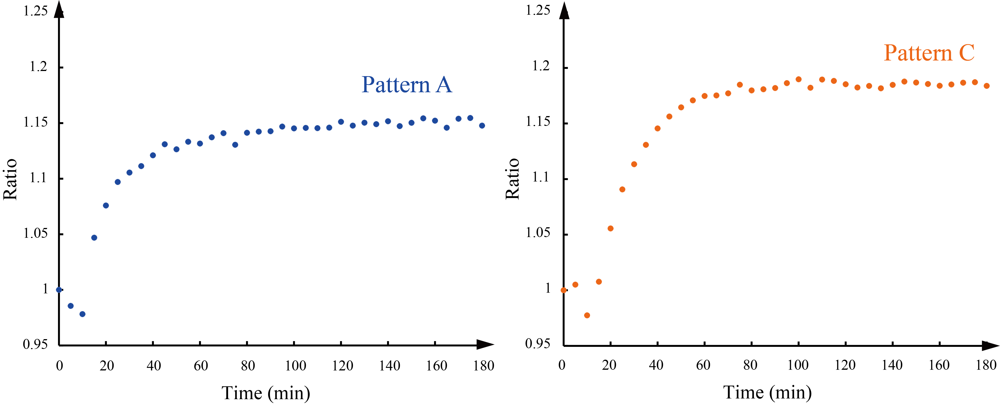

Verification of mismatched base pairs
In the design of DNAWalker, mismatched base pairs were incorporated into the base sequence in order to block undesired reaction pathways. In experiment A, we confirmed that the mismatched base pair worked as expected. Figure 1 shows the results of experiment A. Comparing the lanes 1, 3, and 5, it can be seen that in the lane 3, a band not appearing in the lane 5 appears, and the band appears in the same position in the lane 1 and the lane 5. From this result, in lane 3, W2 was released by the strand displacement reaction at S2 and F2, and a new band appeared. In lane 1, it appeared that band appeared at the same position as lane 5, because reaction did not occur owing to the mismatch base pair between S2 and F1. Likewise, in lanes 2, 4, and 6, in lane 4, a new band appears due to the strand displacement reaction of S1 and F1. In lane 2, it can be said that the same band as lane 6 appears since reaction did not occur owing to the mismatch base pair between S1 and F2.

Furthermore, a fluorescence intensity measurement experiment was conducted to confirm whether changes in the position of bands in lanes 3 and 5 or lanes 4 and 6 were caused by strand displacement reaction. In pattern A in Figure 2, output was released because the fluorescence intensity increased. Thus, double-stranded DNA (S1-W1) and single-stranded DNA (F1) underwent a strand displacement reaction. Likewise, in pattern C, output was emitted due to the strand displacement reaction of S2-W2 and F2, and the fluorescence intensity was increased.
{kind=link}
From the above two experiments, it was confirmed that mismatch base pairs added in order to avoid unintended reactions worked properly.